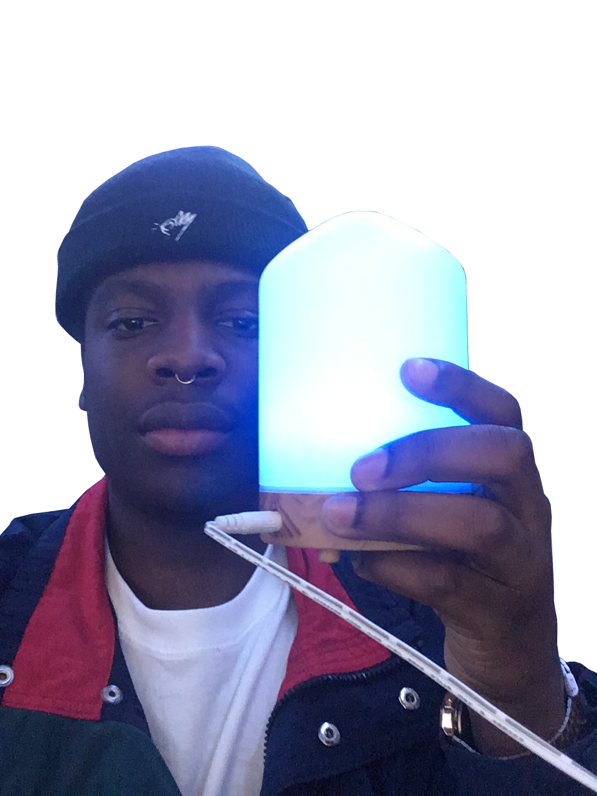
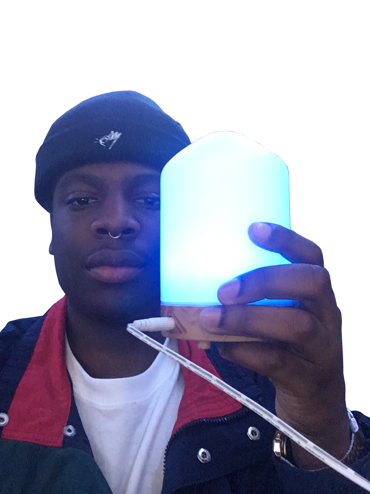
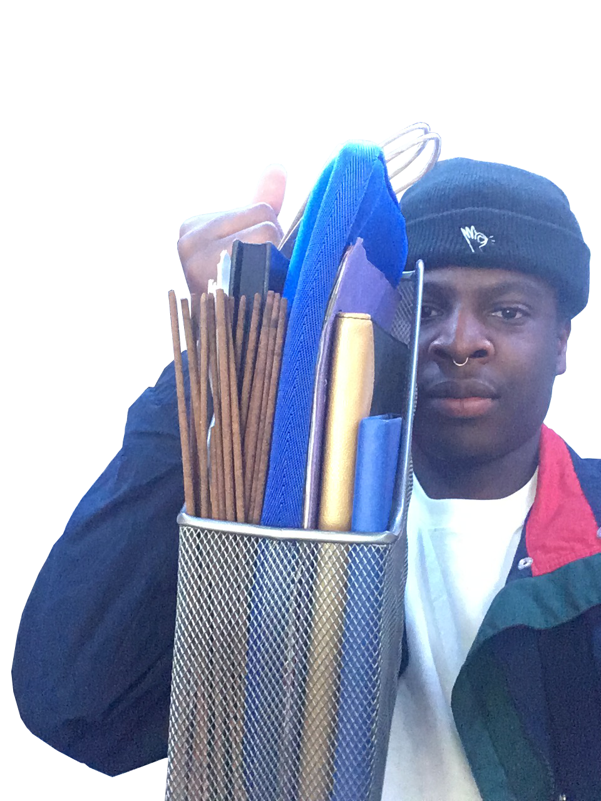
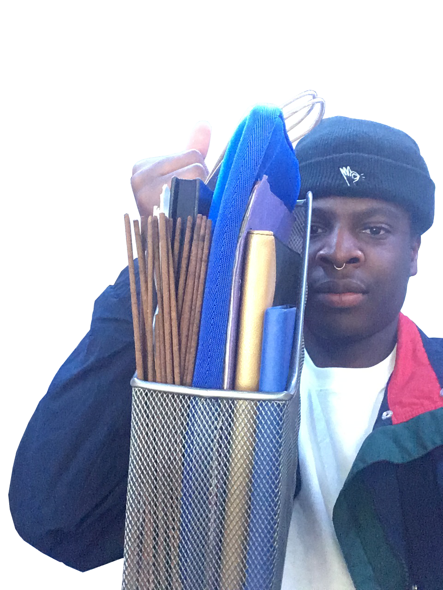

This website serves as a documentation of the containers in my room based on their proximity to my desk. Similar to Zoe Sofia's text, I've meticulously organized every container within a given space and put time into determining what can truly be considered a container by my own standards.
 



 
